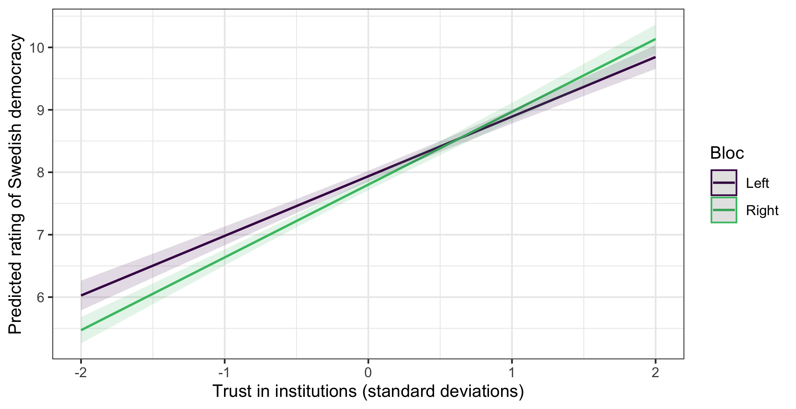
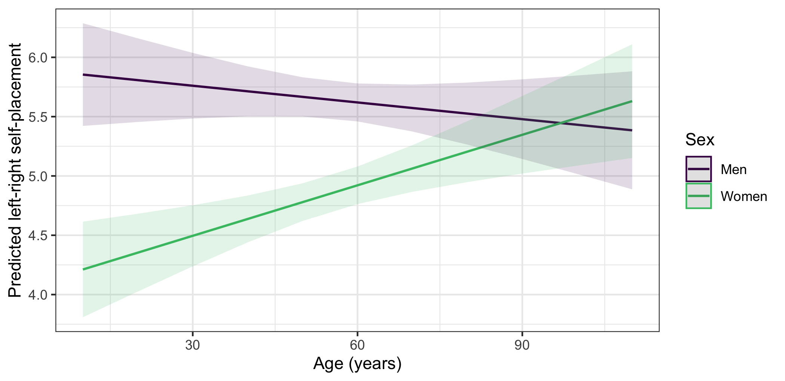
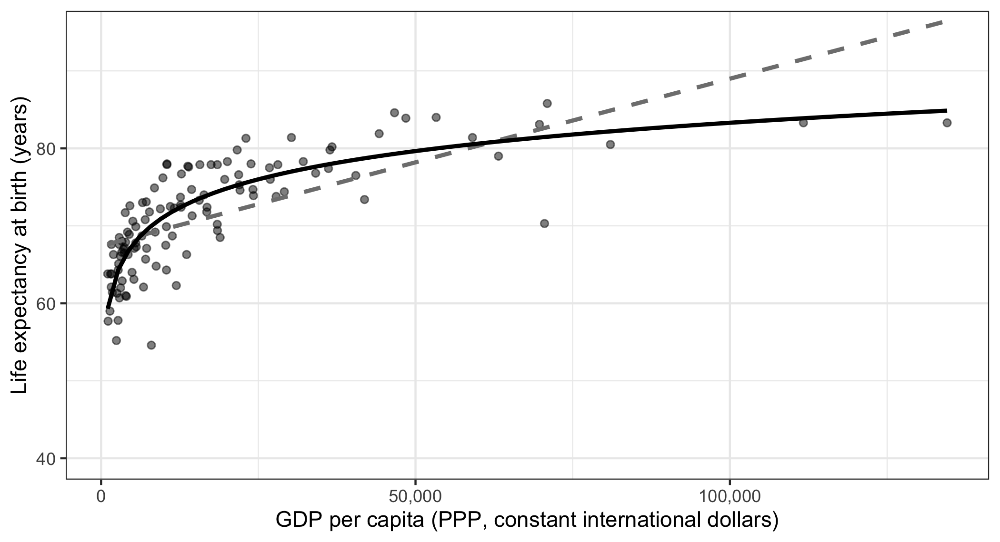

library(ggplot2)
library(dplyr)
library(psych)
library(ggeffects)
swe <- readRDS("data/swe.rds")
trust_items <- c(
"tr_parl", "tr_govt", "tr_court",
"tr_sci", "tr_party", "tr_media"
)
swe$trust <- fa(swe[, trust_items], nfactors = 1, fm = "ml")$scores[, 1]
swe$sex <- factor(
swe$female,
levels = c(0, 1),
labels = c("Men", "Women")
)14 Regression: interactions and non-linear associations
Everything so far has assumed two things about a regression, and both are often wrong.
The first is that each predictor has the same effect for everybody. The second is that the relationship is a straight line. This session relaxes them one at a time.
14.1 Interactions
In session 11 we found that trust in institutions predicts how democratic people think Sweden is, and that it does so about equally on both sides of the political divide once you control for it.
But “controlling for” and “the same for everybody” are different claims. A model with trust + bloc says the trust slope is identical for left and right voters, and forces it to be. An interaction lets it differ.
model_int <- lm(demlevel ~ trust * bloc, data = swe)
round(coef(summary(model_int)), 3)## Estimate Std. Error t value Pr(>|t|)
## (Intercept) 7.936 0.044 178.797 0.000
## trust 0.955 0.050 19.002 0.000
## blocRight -0.134 0.064 -2.076 0.038
## trust:blocRight 0.211 0.072 2.941 0.003trust * bloc is shorthand. It puts in trust, bloc, and the product of the two — the interaction term, printed as trust:blocRight. You could write trust + bloc + trust:bloc and get the same model.
14.1.1 Reading it
Four numbers, and the trap is in the middle two.
(Intercept) = 7.94 — predicted rating for a left-bloc voter with average trust.
trust = 0.95 — the trust slope for left-bloc voters only. Not for everyone. Not on average.
blocRight = -0.13 — the bloc difference at trust = 0. Not overall.
trust:blocRight = 0.21 — how much the trust slope changes for right-bloc voters. So their slope is 0.95 + 0.21 = 1.17.
Once you add an interaction, the other two coefficients change meaning. They are no longer average effects. They are the effect of one variable when the other is zero, which is why it matters enormously whether zero is a meaningful value.
Here it happens to be fine, because
trustis standardised so zero is the average. Had we used raw age,blocRightwould have been the bloc difference among newborns.
The interaction is significant (p = 0.003), so trust does more work for right-bloc voters than for left-bloc voters: 1.17 points per standard deviation against 0.95.
14.1.2 Plot it, always
Interaction coefficients are close to unreadable in a table. Nobody should have to do that arithmetic in their head, and the sign of an interaction term tells you almost nothing on its own.
predictions <- predict_response(
model_int,
terms = c("trust [-2:2 by=0.5]", "bloc")
)
plot(predictions) +
scale_colour_viridis_d(end = 0.7) +
scale_fill_viridis_d(end = 0.7) +
labs(
x = "Trust in institutions (standard deviations)",
y = "Predicted rating of Swedish democracy",
colour = "Bloc",
fill = "Bloc",
title = NULL
) +
theme_bw()
Giving terms two variables produces one line per group of the second, and scale_colour_viridis_d() and scale_fill_viridis_d() put the two lines on the colourblind-safe palette from session 5. Now the interaction is obvious: two lines that are not parallel, and that cross.
Read what it says. Among people who distrust institutions, left-bloc voters rate Swedish democracy higher than right-bloc voters. Among people who trust institutions, it is the other way round. The lines meet at about 0.63 standard deviations of trust.
So the answer to “is there a winner–loser gap?” is: it depends who you ask. That is what an interaction means, and no single coefficient could have said it.
Non-parallel lines are what an interaction is. If you cannot see it on this plot, it is not there in any meaningful sense, whatever the p-value says.
Note also the top right corner: the model predicts 10.13 for the most trusting right-bloc voters, on a scale that stops at 10. Session 12 again, and one more reason not to read predictions at the edges too literally.
14.1.3 When the main effect misleads
A second example, because this catches people.
model_age <- lm(lr_self ~ age * sex, data = swe)
round(coef(summary(model_age)), 4)## Estimate Std. Error t value Pr(>|t|)
## (Intercept) 5.9015 0.2629 22.4514 0.0000
## age -0.0047 0.0045 -1.0520 0.2929
## sexWomen -1.8319 0.3594 -5.0977 0.0000
## age:sexWomen 0.0189 0.0061 3.0750 0.0021The coefficient on age is -0.0047 with p = 0.293 — nothing. Read carelessly, that says age does not matter.
It says no such thing. It says age does not matter for men, since men are the reference category. For women the slope is -0.0047 + 0.0189 = 0.0142 — positive, and the interaction is significant at p = 0.002.
age_predictions <- predict_response(model_age, terms = c("age", "sex"))
plot(age_predictions) +
scale_colour_viridis_d(end = 0.7) +
scale_fill_viridis_d(end = 0.7) +
labs(
x = "Age (years)",
y = "Predicted left-right self-placement",
colour = "Sex",
fill = "Sex",
title = NULL
) +
theme_bw()
Older women place themselves further right than younger women; among men, age makes little difference. Two groups, two different stories, and a model without the interaction would have averaged them into one weak effect.
A question. In model_age, swapping the reference category from men to women would change the coefficient on age from -0.0047 to 0.0142, and its p-value from non-significant to significant.
Nothing about the data has changed. What does that tell you about reporting “the effect of age” from a model containing an interaction?
Do not go hunting. With ten predictors there are forty-five possible two-way interactions, and at the conventional threshold you would expect a couple to come out significant by chance alone. Test interactions you have a reason to expect. An interaction found by searching needs replicating before it means anything.
14.2 Non-linear relationships
The second assumption. Sometimes the relationship is not a straight line at all — and session 4 gave us a case where it cannot be.
world <- readr::read_csv("data/world.csv", show_col_types = FALSE)
world <- world |> filter(!is.na(gdp), !is.na(life))Income has a floor at zero and no ceiling. Life expectancy has both. We argued in session 4 that this rules out a straight line, because a line rising forever eventually promises impossible lifespans.
Fit one anyway and see.
linear <- lm(life ~ gdp, data = world)
round(coef(summary(linear)), 6)## Estimate Std. Error t value Pr(>|t|)
## (Intercept) 67.404245 0.616734 109.292296 0
## gdp 0.000216 0.000022 9.985362 0Significant, and R² = 0.464. Nothing in that output says anything is wrong.
Now ask it to predict.
extremes <- data.frame(gdp = c(1000, 50000, 150000, 300000))
extremes$predicted <- predict(linear, newdata = extremes)
round(extremes, 1)## gdp predicted
## 1 1000 67.6
## 2 50000 78.2
## 3 150000 99.8
## 4 300000 132.2A life expectancy of 132 years. The model is not confused — it is doing exactly what a straight line does. The mistake was ours, in fitting one.
14.2.1 Logarithms
The fix for a relationship that flattens is usually to take the logarithm of the predictor.
A logarithm turns multiplication into addition: log(2), log(4) and log(8) are equally spaced, because each is a doubling. Applying it to income means the model works in proportional change — the same relative increase matters equally whether you are poor or rich — rather than in absolute dollars.
logged <- lm(life ~ log(gdp), data = world)
round(coef(summary(logged)), 3)## Estimate Std. Error t value Pr(>|t|)
## (Intercept) 22.681 3.094 7.331 0
## log(gdp) 5.266 0.332 15.839 0R² rises from 0.464 to 0.686.
extremes$logged <- predict(logged, newdata = extremes)
round(extremes, 1)## gdp predicted logged
## 1 1000 67.6 59.1
## 2 50000 78.2 79.7
## 3 150000 99.8 85.4
## 4 300000 132.2 89.189.1 years at the top instead of 132. Still an extrapolation well beyond the data, but no longer impossible.
Interpreting a logged predictor. The coefficient is the change in the outcome for a one-unit change in the log, which nobody can picture. Multiply it by log(2) and you get the change for a doubling, which everybody can.
coef(logged)[2] * log(2)## log(gdp)
## 3.649911Doubling a country’s income per head is associated with about 3.65 more years of life expectancy — and the same is true whether you double from 2,000 to 4,000 or from 60,000 to 120,000. That is what the log model claims, and it is a claim worth making explicitly, because it might be wrong.
14.2.2 Squared terms
The other common approach is to add the square of the predictor, which lets the line bend once — up then down, or down then up.
quadratic <- lm(life ~ gdp + I(gdp^2), data = world)
round(summary(quadratic)$r.squared, 3)## [1] 0.622I() is needed around gdp^2. Inside a formula ^ means something else — interactions to a given order — and I() says “treat this as ordinary arithmetic”.
R² of 0.622, worse than the log model’s 0.686. And a quadratic always turns back on itself eventually, so extended far enough it will predict life expectancy falling as countries get richer.
Choose the shape from what the variables are, not from the fit. A quadratic is right when the relationship genuinely rises and then falls — the effect of age on income, say. A logarithm is right when the effect diminishes but never reverses, which is what a bounded outcome and an unbounded predictor imply.
ggplot(world, aes(x = gdp, y = life)) +
geom_point(alpha = 0.5) +
geom_smooth(
method = "lm",
formula = y ~ x,
se = FALSE,
colour = "grey50",
linetype = "dashed"
) +
geom_smooth(
method = "lm",
formula = y ~ log(x),
se = FALSE,
colour = "black"
) +
scale_x_continuous(labels = scales::label_comma()) +
coord_cartesian(ylim = c(40, 95)) +
labs(
x = "GDP per capita (PPP, constant international dollars)",
y = "Life expectancy at birth (years)"
) +
theme_bw()
The dashed line is the straight fit and the solid one the logged fit. The straight line is above the data in the middle and below it at both ends — the signature of fitting a line to a curve, and exactly what the residual plot in session 11 was looking for.
A question. The logged model fits better by every measure, and it is the shape session 4 said the limits of the scales required.
It still predicts a life expectancy of 95.4 years for a country with an income per head of a million dollars. Is that a problem with the model, and if so what would fix it?
How to write it up.
An interaction:
The association between trust and evaluations of democracy differed by bloc (b = 0.21, SE = 0.07, p = 0.003). Among left-bloc voters a one standard deviation increase in trust corresponded to a 0.95-point higher rating; among right-bloc voters, 1.17 points (Figure 1).
A transformation:
Life expectancy was modelled as a function of logged GDP per capita, since the two scales are bounded differently and a linear specification predicts impossible values at high incomes. A doubling of income per head was associated with 3.65 additional years of life expectancy (95% CI [3.19, 4.11], R² = 0.69, n = 117).
Mistakes to avoid:
- Reporting an interaction without a plot. The coefficients are not readable on their own.
- Interpreting a main effect as an average effect when an interaction is in the model. It is the effect when the other variable is zero.
- Reporting a main effect’s p-value from a model with an interaction, as though it meant something general. It depends on the reference category.
- Fishing for interactions. Test the ones you predicted.
- Choosing a transformation by R². The shape should follow from what the variables are.
- Reading a logged coefficient as a per-unit change. Convert it to a doubling, or a 10% increase, and say which.
- Extrapolating a quadratic, which always turns round in the end.
In the seminar. swirl lesson 14, Interactions and non-linear associations. Fitting and reading an interaction, plotting it, and fixing a relationship that a straight line gets wrong. Around 30 minutes.